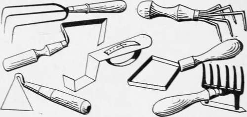

A Dinner Of Herbs
Description
This section is from the book "Culinary Herbs", by M. G. Kains. Also available from Amazon: Culinary Herbs, Their Cultivation, Harvesting, Curing and Uses.
A Dinner Of Herbs
In an article published in American Agriculturist, Dora M. Morrell says: "There is an inference that a dinner of herbs is rather a poor thing, one not to be chosen as a pleasure. Perhaps it might be if it came daily, but, for once in a while, try this which I am going to tell you.
"To prepare a dinner of herbs in its best estate you should have a bed of seasonings such as our grandmothers had in their gardens, rows of sage, of spicy mint, sweet marjoram, summer savory, fragrant thyme, tarragon, chives and parsley. To these we may add, if we take herbs in the Scriptural sense, nasturtium, and that toothsome esculent; the onion, as well as lettuce. If you wish a dinner of herbs and have not the fresh, the dried will serve, but parsley and mint you can get at most times in the markets, or in country gardens, where they often grow wild.
"Do you know, my sister housewife, that if you were to have a barrel sawed in half, filled with good soil, some holes made in the side and then placed the prepared half barrel in the sun, you could have an herb garden of your own the year through, even if you live in a city flat? In the holes at the sides you can plant parsley, and it will grow to cover the barrel, so that you have a bank of green to look upon. On the top of the half barrel plant your mint, sage, thyme and tarragon. Thyme is so pleasing a plant in appearance and fragrance that you may acceptably give it a place among those you have in your window for ornament.
Assortment of Favorite Weeders
"The Belgians make a parsley soup that might begin your dinner, or rather your luncheon. For the soup, thicken flour and butter together as for drawn butter sauce, and when properly cooked thin to soup consistency with milk. Flavor with onion juice, salt and pepper. Just before serving add enough parsley cut in tiny bits to color the soup green. Serve croutons with this.
"For the next course choose an omelette with fine herbs. Any cookbook will give the directions for making the omelette, and all that will be necessary more than the book directs is to have added to it minced thyme, tarragon and chives before folding, or they may be stirred into the omelette before cooking.
"Instead of an omelette you may have eggs stuffed with fine herbs and served in cream sauce. Cut hard-boiled eggs in half the long way and remove the yolks. Mash and season these, adding the herbs, as finely minced as possible. Shape again like yolks and return to the whites. Cover with a hot cream sauce and serve before it cools. Both of these dishes may be garnished with shredded parsley over the top.
"With this serve a dish of potatoes scalloped with onion. Prepare by placing in alternate layers the two vegetables; season well with salt, pepper and butter, and then add milk even with the top layer. This dish is quite hearty and makes a good supper dish of itself.
"Of course you will not have a meal of this kind without salad. For this try a mixture of nasturtium leaves and blossoms, tarragon, chives, mint, thyme and the small leaves of the lettuce, adding any other green leaves of the spicy kind which you find to taste good. Then dress these with a simple oil and vinegar dressing, omitting sugar, mustard or any such flavoring, for there is spice enough in the leaves themselves.
"Pass with these, if you will, sandwiches made with lettuce or nasturtium dressed with mayonnaise. You may make quite a different thing of them by adding minced chives or tarragon, or thyme, to the mayonnaise. The French are very partial to this manner of compounding new sauces from the base of the old one. After you do it a few times you also will find it worth while.
Popular Adjustable Row Marker
"When it comes to a dessert I am afraid you will have to go outside of herbs. You can take a cream cheese and work into it with a silver knife any of these herbs, or any two of them that agree with it well, and serve it with toasted crackers, or you can toast your crackers with common cheese, grating above it sage and thyme."
Whether this "dinner of herbs" appeals to the reader or not. I venture to say that no housewife who has ever stuffed a Thanksgiving turkey, a Christmas goose or ducks or chickens with home-grown, home-prepared herbs, either fresh or dried, will ever after be willing to buy the paper packages or tin cans of semi-inodorous, prehistoric dust which masquerades equally well as "fresh" sage, summer savory, thyme or something else, the only apparent difference being the label.
To learn to value herbs at their true worth one should grow them. Then every visitor to the garden will be reminded of some quotation from the Bible, or Shakespeare or some other repository of interesting thoughts; for since herbs have been loved as long as the race has lived on the earth, literature is full of references to facts and fancies concerning them. Thus the herb garden will become the nucleus around which cluster hoary legends, gems of verse and lilts of song, and where one almost stoops to remove his shoes, for "The wisdom of the ages Blooms anew among the sages."
Continue to: